每行：RGB565 原图 → 已验收算法 → 两项实验。下拉可看单项开关。统一参数、不裁脸、不逐图调参。这些是实际 C++ 输出；不含六色量化或真实屏幕模拟。已验收固件未修改。局部平静不等于背景，运行成功也不等于审美验收。
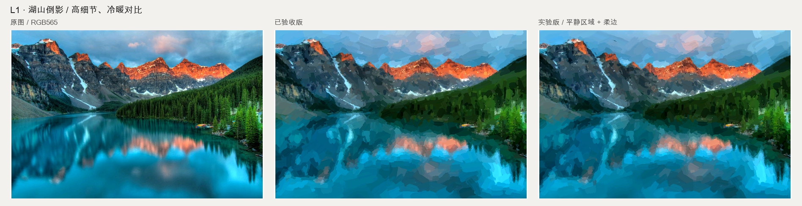
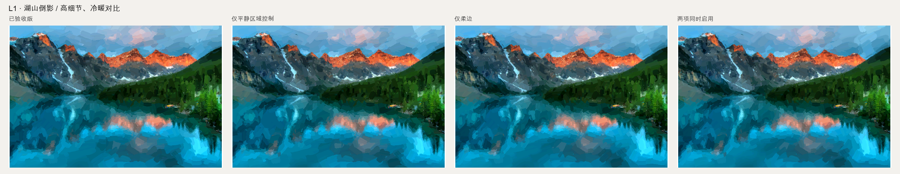
Photo: James Wheeler
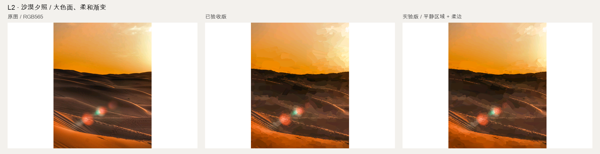
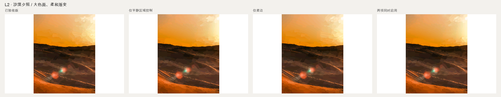
Photo: Henrik Le-Botos
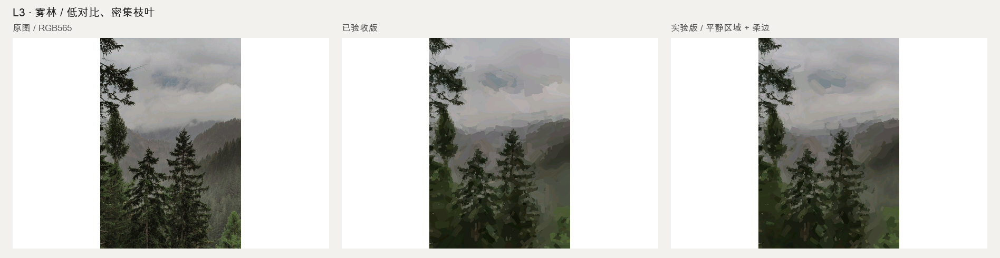
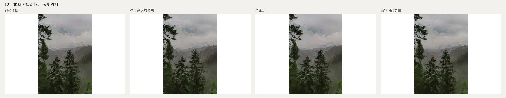
Photo: Laura Chouette
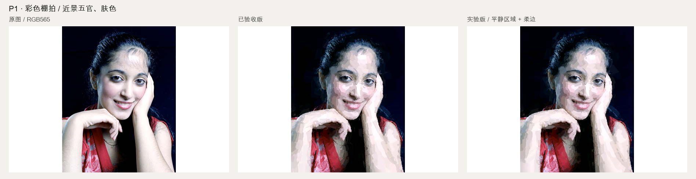
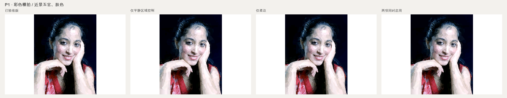
Photo: Harry H Brewster
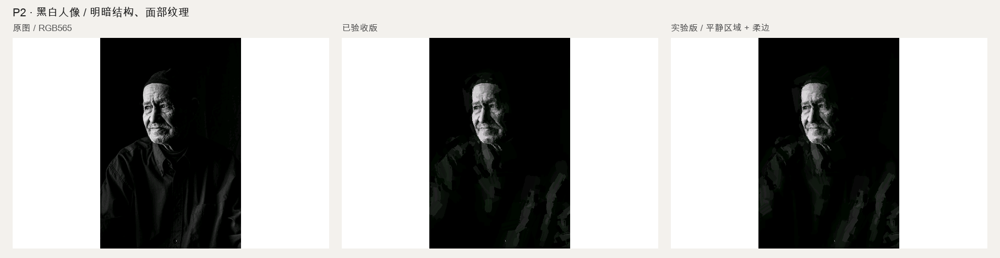
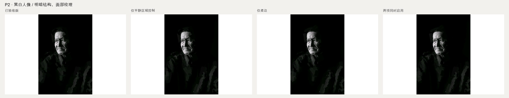
Photo: MAG Photography
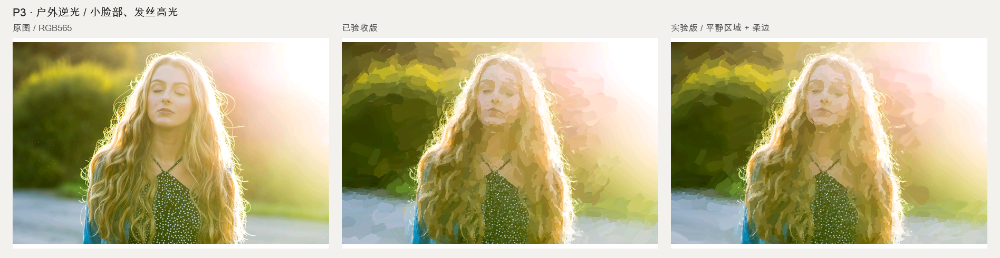
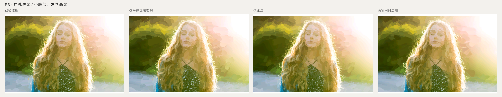
Photo: Gilles Scherrer
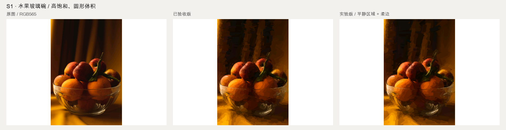
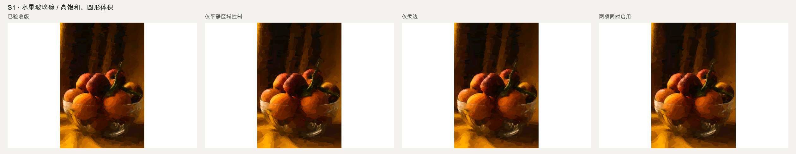
Photo: Anna Astakhova
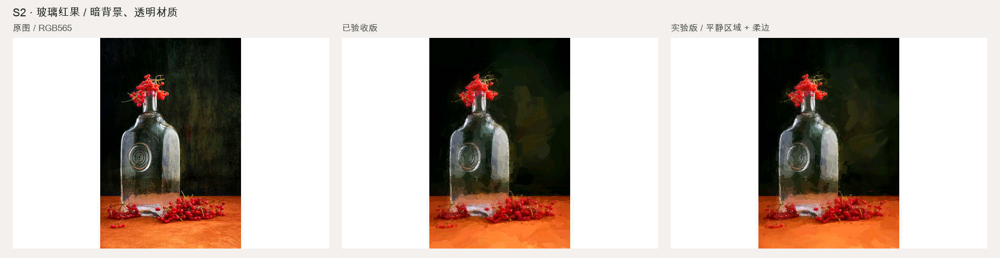
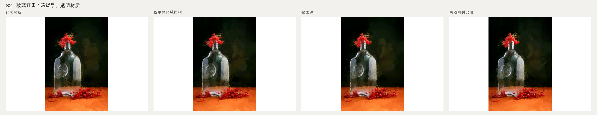
Photo: Valentin Ivantsov
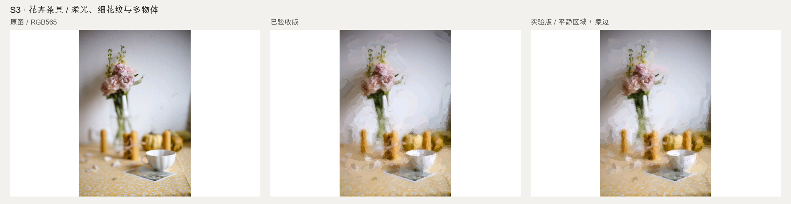
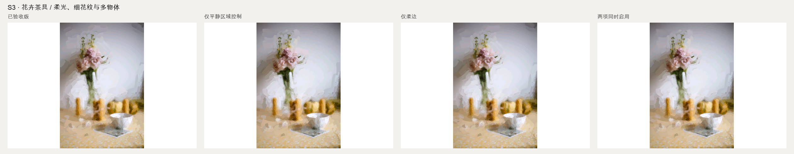
Photo: Мария